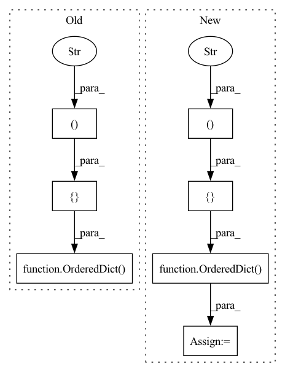

Pattern ID :7453

Before Change
// fake_Bgct =util.tensor2im(self.fake_Bgct,self.img_type)
ret_visuals = OrderedDict([("1.real_A", real_A),
("2.fake_A", fake_A),
("3.fake_A_idt", fake_A_idt),
("4.real_B", real_B),
("5.fake_B", fake_B),
("6.fake_B_idt", fake_B_idt),
//("fake_Bgct", fake_Bgct),
//("reinhard", reinhard),
//("reinhard2", reinhard2),
// ("real_A_hist", real_A_hist),
// ("real_B_hist", real_B_hist),
// ("fake_A_hist", fake_A_hist),
// ("fake_B_hist", fake_B_hist),
// ("fake_B1", fake_B1),
// ("fake_A1", fake_A1),
// ("fake_B2", fake_B2),
// ("fake_A2", fake_A2),
// ("fake_B3", fake_B3),
// ("fake_A3", fake_A3),
// ("fake_B4", fake_B4),
// ("fake_A4", fake_A4),
("7.Map_A", img_A_map),
("8.Map_B", img_B_map),
])
return ret_visuals
def get_current_visuals_test(self):
real_A = util.tensor2im(self.real_A,self.img_type)
After Change
img_A_map = util.tensor2im(self.input_A_Map,"rgb")
img_B_map = util.tensor2im(self.input_B_Map,"rgb")
ret_visuals = OrderedDict([("01_input", real_A),
("02_target", real_B),
("03_fake_B", fake_B),
("04_A_seg", img_A_map),
("05_B_seg", img_B_map),
])
return ret_visuals
In pattern: SUPERPATTERN
Frequency: 4
Non-data size: 7
Instances
Fragment ID: 24652665
Project Name: codeslake/color_transfer_histogram_analogy
Commit Name: 4c27b4681e9692dbcb6f034c4d140609187b0a5c
Time: 2020-05-31
Author: junyonglee@postech.ac.kr
File Name: models/colorhistogram_model.py
M Class Name: ColorHistogram_Model
N Class Name: ColorHistogram_Model
M Method Name: get_current_visuals(1)
N Method Name: get_current_visuals(1)
M Parent Class: BaseModel
N Parent Class: BaseModel
M File Name: models/colorhistogram_model.py
N File Name: models/colorhistogram_model.py
M Start Line: 403
M End Line: 461
N Start Line: 218
N End Line: 237
'>
Before Change
if label.label is None:
return
tag_data = OrderedDict([
("label", self._get_label(label.label).name),
])
if label.group:
tag_data["group_id"] = str(label.group)
self._writer.open_tag(tag_data)
After Change
return
label_name = self._get_label(label.label).name
tag_data = OrderedDict([
("label", label_name),
])
if label.group:
tag_data["group_id"] = str(label.group)
self._writer.open_tag(tag_data)
'>
Fragment ID: 24652623
Project Name: openvinotoolkit/datumaro
Commit Name: ce699692017dd5e1c5de2a97c47a1b2332ae0b1b
Time: 2021-03-31
Author: maxim.zhiltsov@intel.com
File Name: datumaro/plugins/cvat_format/converter.py
M Class Name: _SubsetWriter
N Class Name: _SubsetWriter
M Method Name: _write_tag(3)
N Method Name: _write_tag(2)
M Parent Class:
N Parent Class:
M File Name: datumaro/plugins/cvat_format/converter.py
N File Name: datumaro/plugins/cvat_format/converter.py
M Start Line: 297
M End Line: 307
N Start Line: 314
N End Line: 343
'>
Before Change
img_A_map = util.tensor2im(self.input_A_Map,"rgb")
img_B_map = util.tensor2im(self.input_B_Map,"rgb")
ret_visuals = OrderedDict([("01_input", real_A),
("02_target", real_B),
("03_fake_B", fake_B),
("04_A_seg", img_A_map),
("05_B_seg", img_B_map),
])
return ret_visuals
After Change
def get_current_visuals(self):
ret_visuals = OrderedDict([("01_input", util.tensor2im(self.inp,self.img_type)),
("02_target", util.tensor2im(self.tar,self.img_type)),
("03_output", util.tensor2im(self.out,self.img_type))])
return ret_visuals
//////////////////////////////////////////////////////////////////////////////////////////////////////////////////////////////////////////////////////////////////////////////////////////////////////////////////////////////////////////////////////
'>
Fragment ID: 24652784
Project Name: codeslake/color_transfer_histogram_analogy
Commit Name: 7ac44b8cd12f9f7339b4998b7ca3240670b68c2f
Time: 2020-07-20
Author: junyonglee@postech.ac.kr
File Name: models/colorhistogram_model.py
M Class Name: ColorHistogram_Model
N Class Name: ColorHistogram_Model
M Method Name: get_current_visuals(1)
N Method Name: get_current_visuals(1)
M Parent Class: BaseModel
N Parent Class: BaseModel
M File Name: models/colorhistogram_model.py
N File Name: models/colorhistogram_model.py
M Start Line: 218
M End Line: 237
N Start Line: 152
N End Line: 154
'>
Before Change
self._writer.close_root()
def _write_item(self, item, index):
image_info = OrderedDict([
("id", str(cast(item.attributes.get("frame"), int, index))),
])
filename = item.id + CvatPath.IMAGE_EXT
image_info["name"] = filename
if item.has_image:
size = item.image.size
After Change
def _write_item(self, item, index):
if not self._context._reindex:
index = cast(item.attributes.get("frame"), int, index)
image_info = OrderedDict([ ("id", str(index)), ])
filename = item.id + CvatPath.IMAGE_EXT
image_info["name"] = filename
if item.has_image:
size = item.image.size
'>
Fragment ID: 24652678
Project Name: openvinotoolkit/datumaro
Commit Name: f6254df2ad848e02e340d7820c764731fcc7ecae
Time: 2020-09-16
Author: maxim.zhiltsov@intel.com
File Name: datumaro/plugins/cvat_format/converter.py
M Class Name: _SubsetWriter
N Class Name: _SubsetWriter
M Method Name: _write_item(3)
N Method Name: _write_item(3)
M Parent Class:
N Parent Class:
M File Name: datumaro/plugins/cvat_format/converter.py
N File Name: datumaro/plugins/cvat_format/converter.py
M Start Line: 161
M End Line: 163
N Start Line: 161
N End Line: 163